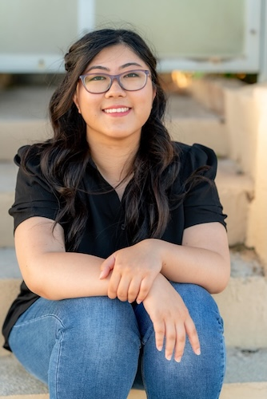
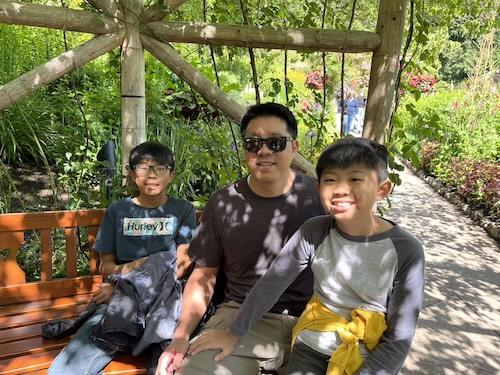

This picture was taken on a family trip/vacation to Canada, where we got to experience Canada day and a delayed flight home. My mom's name is Adrienne, and she's part of our stake's primary presidency, while my dad's name is Nathan, and he's the current bishop of our ward. My parents have been together for a little more than 20 years, having met briefly on this island and again through friends at BYU.

A Graduation Photo
Alyssa
My name is Alyssa, and I am the creator of this webpage, in addition to being the oldest child/only daughter in my family. I am currently attending BYUH, majoring in Computer Science, after graduating from Kamehameha Schools. I have a special love of fantasy/fiction that I developed in high school, where I started a Fantasy club at school with some friends. I enjoy playing D&D with my friend group, sleeping, creating, reading, and scrolling on my phone.

Younger Brothers & Dad
Elijah & Isaac
The picture above was also taken in Canada, in a garden we visited, where my younger brothers and dad attempted to spot all the benches in the areas we walked through. Elijah also enjoyes D&D, playing with his friends in an after school club, while Isaac spends his time cubing (with a variety of different rubik's cubes) and attempting to edit videos with his ipad. They both enjoy getting on call with their friends and playing video games, although it does make it harder to see them when they spend all their time in their rooms...